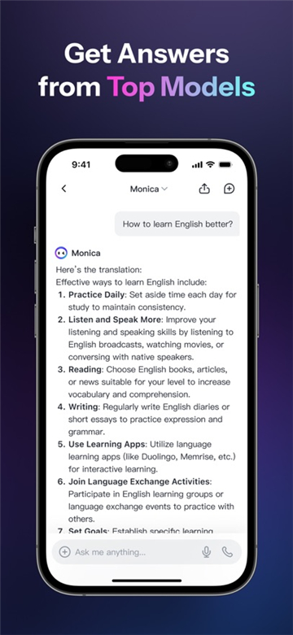

用了 Manus 半年，才发现它藏着这些大部分人不知道的暗门
从 MCP 连接器到 OpenAI SDK 兼容层，从临时充积分到 Cloud Computer，Manus 有一堆官方不宣传的隐藏功能等着被翻出来。
你以为 Manus 就是个"扔一句话给它、等它交成品"的智能体工具？坦白说我最开始也这么觉得。写个研究报告、生成个网页、搞个 PPT，这些都是明面上的，几乎每个介绍 Manus 的文章都会提。但最近半年把它翻了个底朝天，我发现了一堆藏得真深的玩意儿——它的官网和文档里倒是有提到，但没重点讲，或者根本藏在角落里得自己点进去才能看到的功能。
第一个暗门：MCP 连接器，让它真正接入你的日常工具
第一次在设置里看到「连接器」这个 Tab 时我愣了一下——Manus 居然能接 Gmail、Notion、Stripe、Slack、Google Calendar、Google Sheets、HubSpot 这些？而且不是只读数据那么简单。
授权流程其实很顺：打开设置，找到连接器 Tab，点你想要的服务（比如 Gmail），跳转到 Google 登录页用 OAuth 2.0 授权，自动跳回 Manus 就显示"已连接"了。最爽的是整个过程它不碰你的密码——只是拿一个授权令牌，随时可以撤销。每个连接器的授权是独立的，断开一个不影响其他。
功能分两种：只读的能帮你拉数据汇总，读写的能帮你操作了。比如它能去 Stripe 后台查上个月的总收入、订阅用户数和退款率，直接生成数据看板给你；或者监控 Slack 某个频道，有人发帖带特定标签就自动分析、生成回复建议发回去。还有 Google Calendar 是能读写的——让 Manus 帮你自动排日程、发邀请，比你手动弄还靠谱。
藏得最深的是最小权限这个细节。授权时有些服务（比如 Gmail）可以选权限范围，不是全量授权。比如你只给它读「工作邮件」标签的权限，它就碰不到收件箱里的其他邮件。这个设计挺良心的，但我身边大部分人授权时直接点"全部允许"——没必要，养成最小权限的习惯对自己的数据安全负责。

还有个更深的细节：Team 方案的管理员能精细控制团队成员能连哪些连接器，还能审计谁什么时候连了什么。对于公司里用 Manus 处理客户数据的场景来说，这个管理能力很关键，但官方没怎么宣传，感觉是藏在企业版后面偷偷卖的卖点。
第二个暗门：API 接入 + OpenAI SDK 兼容层，把 Manus 嵌进你自己的代码
这个藏得真深，我是偶然在 Manus 设置的一个小角落里发现的。Manus 有个完整的 API（open.manus.ai），详细端点和参数可以去ai agent文档翻一下，但最狠的是——它提供了 OpenAI SDK 兼容层。
什么意思？就是你已经在用 OpenAI 的 Python 客户端或者 Node.js 客户端了对吧？现在想换 Manus？不用重写代码，只要把 base_url 改一下，就能直接调用 Manus API。这个设计对于开发者来说太友好了，迁移成本几乎为零。我试了一下，原来调 GPT-4 的那段代码，改个 URL 就能跑出 Manus 的智能体任务，输出结果的格式甚至都差不多。
任务是异步执行的：提交指令后立马返回一个 task_id，你用这个 ID 轮询状态（running / pending / completed / failed），完成后再调接口拿结果。用 API 能玩的场景很多——比如你自己的 SaaS 加个 AI 助手功能，让 Manus 当后端；或者 CI/CD pipeline 里代码合并时自动触发生成 changelog；甚至批量给一堆产品写介绍，比手动在客户端里一条一条发方便太多了。
有个坑要注意：API 任务和客户端任务共享同一个积分池。我之前跑了个批量生成任务，没盯着积分，结果把整个月的额度用完了，客户端里提交任务全失败。别犯我的错——跑大批量 API 任务之前先确认积分够不够，或者用临时充积分功能垫一下。
第三个暗门：Cloud Computer，你以为积分够就能用？那是两个东西
Manus 2.0 把能力分了三档模型（Lite / 2.0 / 2.0 Max），Pro 订阅给积分额度，这个大家都知道。但 Cloud Computer 是单独付费的——不走月积分额度，按使用时长计费，类似云服务器。
这意味着什么？意味着你可以随时创建一个远程的 Cloud Computer 实例跑重活——比如跑个带数据库的全栈应用、或者一个多人游戏的后端，然后用完销毁，不锁约。价格从 Basic（简单脚本）到 Advanced（团队数据库）不等，灵活度很高。我上周试了一个 Advanced 实例，跑了个小 SaaS 的原型，用了三个小时，费用才几块钱，比租一台临时云主机划算。
但这个功能在 UI 上藏得太深了，我是在账单页面的角落里看到的一个小链接才点进去的。官方也没怎么介绍这个模块，感觉像是偷偷做出来给重度用户用的。
第四个暗门：临时充积分，急着跑活不用等下个月
有没有遇到过这种情况：月中积分用完了，但有个大活要赶？正常的操作是升级订阅，等新的计费周期。但 Manus 有个临时充积分的功能——官方帮助中心有入口，充的积分和月额度独立，充值后立即到账，不影响正常月订阅。
我上个月用了一次，充了 2000 积分赶了一个客户报告，用完就没了，下个月照样正常扣月费。相当于买了个"急救包"，挺实用的。入口藏在帮助中心的一个 FAQ 下面，不是显眼位置，得搜关键词才能找到。
手机端的隐藏用法：任务在云端跑，关掉 App 也不停
安卓客户端直接从下载页拿安装包就行。这个其实很多人没意识到——在安卓客户端上发起任务后，关掉 App、锁屏、切出去干别的，任务继续在云端跑。你坐地铁时交出去的活，到站收的时候已经跑完了。完成了或者需要你确认的时候，手机直接弹通知。
我现在睡前会扔个任务进去，比如"帮我整理下周的行业资讯"，第二天早上起来看已经跑完了。这个配合 Cloud Computer 用更爽——它跑重活的同时，你手机该干嘛干嘛，不耗电不占内存。
一个提醒：连接器的权限要管好
讲个不太愉快的事：我一个朋友的 Manus 账号上个月被盗了，有人用他的连接器权限在 Slack 频道里发垃圾消息。好在 Manus 的安全机制还可以——发现异常后先改密码，去连接器里全部断开授权，检查 Cloud Computer 有没有被异常创建，然后联系客服就能解决。
这里的关键是连接器的独立授权设计——断开一个不影响其他。这比所有权限绑死在一个地方强多了。另外 Team 方案的管理员可以启用连接器的 SSO 策略，还能审计成员操作，企业用户务必把这些安全开关打开。
收尾
Manus 的核心定位是"连接思维与行动"，但它藏起来的这些暗门，才是让这个工具真正好用起来的地方。MCP 连接器让它接入你的日常生态，API 让它可编排可集成，Cloud Computer 让它能跑重型任务，临时充积分给你应急选项。手机端的云端执行更是把"随时随地干活"的体验做出来了。
把它用透，别只当一个"一句话生成器"。想深入研究底层实现的话，这套资料在GitHub、Gitee、GitCode 三个仓库都有备份，国内网络环境下哪个顺手就用哪个。